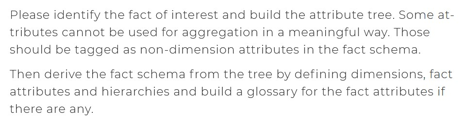
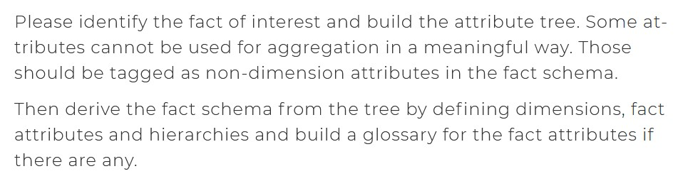

Data Modelling
This is an example of how to create a logical data model based on an Entity Relationship diagram and a case scenario.
This example is an excercise published by the Vienna University of Economic and Business on their website. I will add here the case scenario but I will leave as well the link to the website in case you want to take a deeper look.
 

Step 1: Define the Fact Table
Fact Table name should be the business process that defines the model. In this example, the model describes a travel booking system. Some of the metrics that correspond to the fact table and that we can infer from the ER and the problem description are:
-Number of bookings.
-Number of customers
-Number of bookings
-Number of travels
-Number of destinations
-Number of destination countries
-Number of travel agencies
-Total costs
So, our Fact Table should look like this:

Step 2: Define the granularity
Fact Table name should be the business process that defines the model. In this example, the model describes a travel booking system. Some of the metrics that correspond to the fact table and that we can infer from the ER and the problem description are:
Step 3: Define the Dimensions
Dimensions' name should be Nouns that define the diferent entities/objects, associated to the business process. It's important to note that they are NOT necesarily the same as the Entities fro the ER diagram. This are the dimensions that you can find in the example:
-Customers.
-Travels.
-Destinations.
-Countries.
-Agencies.
-Date of Booking.
Our model should now look like this:
Step 4: Define the Hierarchies
This are the dimensions that you can find in the example:
-Date of Booking:
-Year.
-Month.
-Day.
-Customer:
-Type.
-Address
Our model should now look like this: